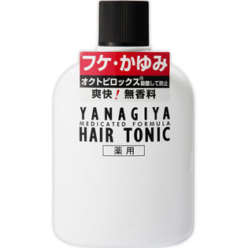

返回列表
产品名称：柳屋 薬用ヘアトニック ＜フケ・かゆみ用＞

柳屋本店 柳屋 薬用ヘアトニック ＜フケ・かゆみ用＞ ２４０ｍｌ（医薬部外品）
メーカー 柳屋本店
JANコード 4903018113853
商品の特徴
○オクトピロックス 殺菌して防止
○爽快！無香料
○薬用
成分・分量
有効成分:酢酸トコフェロール、グリチルリチン酸ジカリウム、ピロクトンオラミン その他の成分:メントール、POE硬化ヒマシ油、濃グリセリン、ニンジンエキス、サリチル酸、ヒアルロン酸Na-2、pH調整剤、エタノール
用法及び用量
洗髪後の清潔な頭皮に適量をふりかけ、指の腹で全体を軽くマッサージしてください。